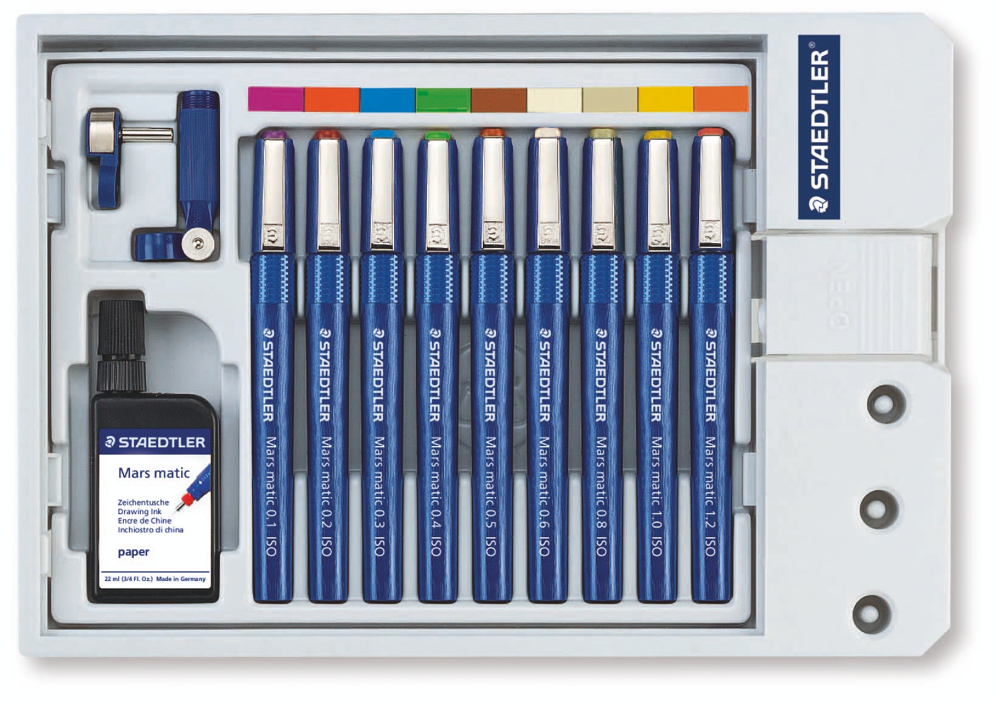
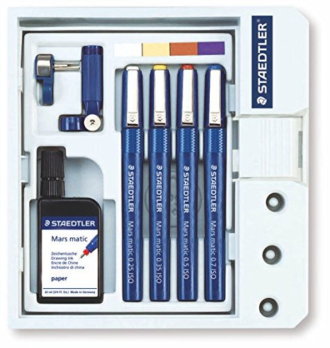
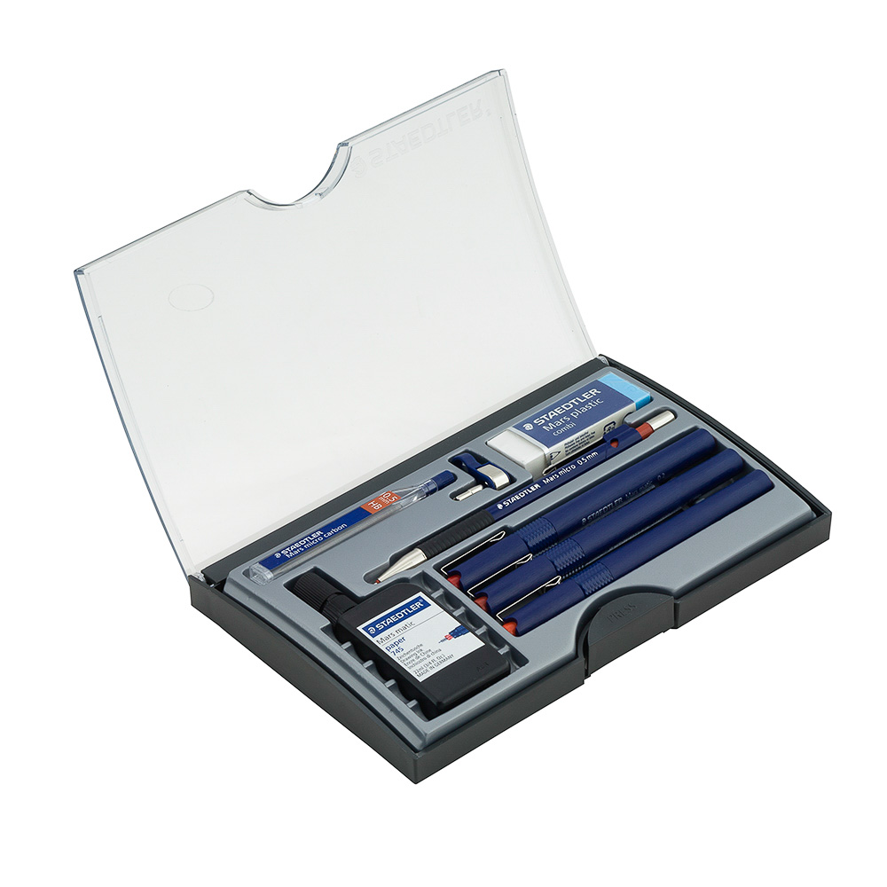

ESTUCHES DE RAPIDOGRAFOS
Se denomina rapidógrafo o estilógrafo a un instrumento de dibujo que funciona utilizando tinta china o aceite, similar a una pluma estilográfica, cuyo diseño es especial para el uso en arquitectura y dibujo de precisión.
ESTUCHE DE RAPIDOGRAFO 9 UNIDADES

PRECIO: Q 855.00
SET CON 9 RAPIDOGRAFOS RECAARGABLES
ROTRING ESTILOGRAFOS:

PRECIO: Q 500.00
SET CON 4 UNIDADES
RAPIDOGRAFOS STAEDTLER:

PRECIO: Q 410.00
700 C615CA02/03 (8X6)